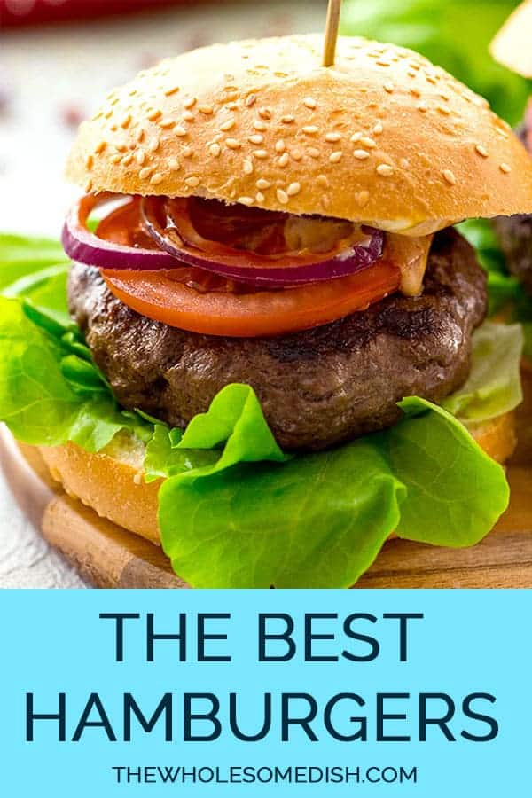

Classic Burger Recipe

Description
A burger is a classic and beloved American dish that has gained worldwide popularity. It typically consists of a
juicy meat patty sandwiched between two buns, accompanied by various toppings and condiments. Burgers are
incredibly versatile, allowing you to customize them according to your preferences. Whether you prefer a
traditional beef patty or opt for a vegetarian or vegan option, burgers are a delicious and satisfying choice.
Ingredients
- 1 1/2 pounds 80% lean 20% fat ground beef or ground chuck
- 1 tablespoon Worcestershire sauce/li>
- 1 1/2 teaspoons seasoning salt
- 1 teaspoon garlic powder
- 1/2 teaspoon ground black pepper
- Optional: 4 slices of cheese
- 4 hamburger buns
- Optional: hamburger toppings - lettuce tomato, onion, pickles, ketchup, mustard, mayo, etc.
Instructions
- Preheat the grill to 375 degrees F (medium-high)./li>
- In a large bowl, add the beef. Sprinkle evenly with the Worcestershire sauce, seasoning salt, garlic powder,
and pepper. Use your hands to mix the ingredients until they are just combined.
- Divide the meat mixture into fourths. Take ¼ of the meat mixture and use your hands to press it into the
shape of a hamburger patty that is about ¾ inch thick. Make an indention in the middle of the patty to
prevent bulging in the center of the hamburger as it cooks. Repeat with the remaining meat mixture, making 4
hamburgers.
- Place the burgers on the grill. Cook 4-5 minutes on the first side. Flip the burgers over and cook an
additional 4-5 minutes, until the burgers have reached the desired doneness.*
- If adding cheese, lay a slice of cheese on each burger patty about 1 minute before taking the burgers off
the grill, so the cheese has a chance to melt.
Serve the burgers on hamburger buns with optional hamburger toppings.
Back To Recipes